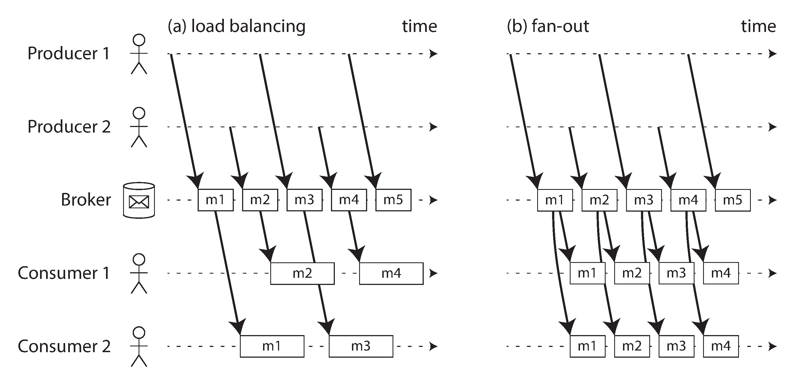
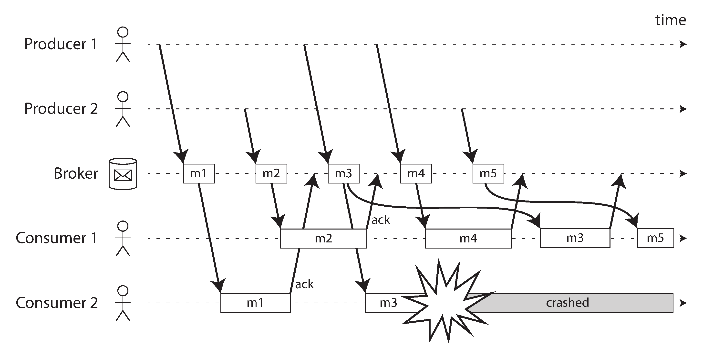
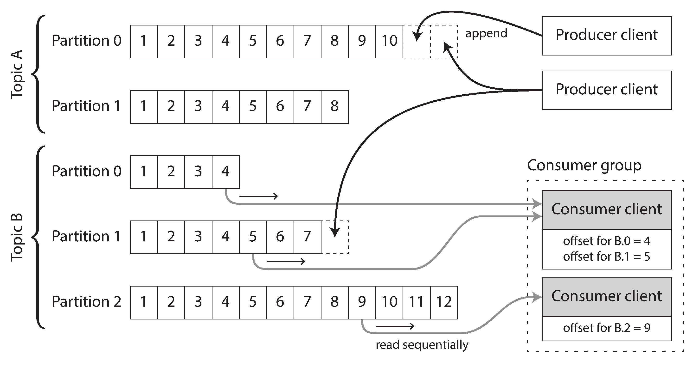
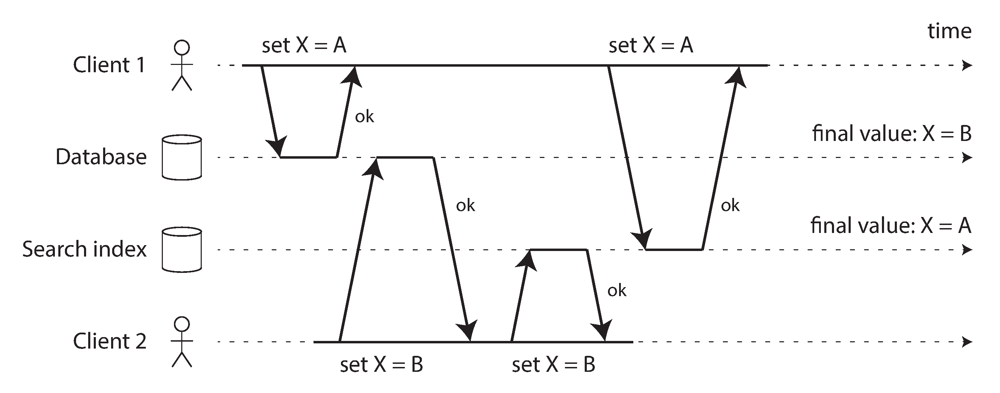
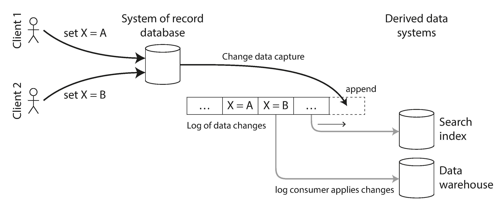
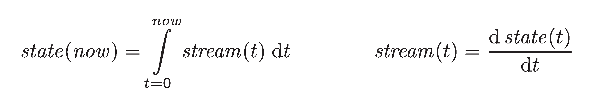

But data is unbounded — users produce data continuously. The dataset is never "complete."
📦 Batch Processing
Divide data into chunks (e.g., one day). Process after the period ends.
Changes reflected a day later — too slow!
🔄 Stream Processing
Process every event as it happens. Abandon fixed time slices.
Continuous, incremental processing.
A "stream" = data incrementally made available over time (stdin, TCP, lazy lists, video…)
Transmitting Event Streams
How streams are represented, stored, and transported
Events: The Unit of Streaming
An event = small, self-contained, immutable object describing something that happened
Contains a timestamp (when it happened)
Encoded as text, JSON, or binary (Avro, Protobuf)
Terminology:
📤 Producer
Generates events (also: publisher, sender)
📥 Consumer
Processes events (also: subscriber, recipient)
Related events grouped into a topic (or stream). Polling a database for changes is expensive — better to use notifications.
Messaging Systems: Two Key Questions
1. What if producers are faster than consumers?
Drop messages (accept loss)
Buffer in a queue (how big? memory or disk?)
Backpressure / flow control (block the producer)
Unix pipes & TCP use backpressure (small fixed buffer).
2. What if nodes crash — are messages lost?
Durability requires disk writes and/or replication
Higher throughput if you can afford to lose some messages
Sensor readings: loss may be OK. Event counters: loss is not!
Message Brokers
A database optimized for message streams. Centralizes data handling.
Producers write → broker stores → consumers read
Tolerates clients that come and go (connect, disconnect, crash)
Consumers are asynchronous — producer doesn't wait for processing
Brokers vs Databases:
Brokers delete messages after delivery; DBs keep until explicit delete
Brokers assume small working set (short queues)
Brokers notify on new data; DBs require polling
RabbitMQActiveMQIBM MQGoogle Pub/Sub
Multiple Consumers
Two patterns for consuming from the same topic:
⚖️ Load Balancing
Each message → one consumer. Share work. Parallelize expensive processing.
📢 Fan-out
Each message → all consumers. Independent processing, like multiple batch jobs on same file.
Can be combined: consumer groups that each get all messages, but within a group, work is shared.

Acknowledgments & Redelivery
Consumer must acknowledge processing. If connection drops → redeliver to another consumer.
⚠️ Ordering problem:
Consumer 2 crashes while processing m3
Consumer 1 gets m4, then redelivered m3
Order becomes: m4, m3, m5
Load balancing + redelivery = messages reordered. OK if independent; problematic with causal dependencies.

Log-Based Message Brokers
Hybrid: durable storage of databases + low-latency notifications of messaging.
Append-only log on disk, partitioned for throughput
Each message gets a monotonic offset
Messages within partition are totally ordered
Millions of messages/sec via partitioning + replication
Apache KafkaAmazon KinesisTwitter DistributedLog

Logs vs Traditional Messaging
AMQP/JMS Style
Assign individual messages to consumers
Message-level acknowledgment
Deleted after delivery
✅ Fine-grained parallelism
❌ Can't replay old messages
Log-Based (Kafka)
Assign entire partitions to consumers
Offset tracking (like replication LSN)
Retained on disk (days/weeks)
✅ Replay, experimentation, debugging
❌ Max parallelism = # partitions
Throughput constant regardless of retention length — every message is written to disk anyway.
Consumer Offsets & Replaying
Offset = position in the log. All messages before it are processed; after it are pending.
Broker only needs to periodically record offset — not track per-message acks
Like a log sequence number in database replication (broker = leader, consumer = follower)
Disk space: log divided into segments. Old segments deleted (circular buffer on disk).
~11 hours
Time to fill a 6 TB drive at max sequential write speed (150 MB/s)
💡 Replaying: reset offset to yesterday → reprocess. Like batch processing — but on a stream!
Databases and Streams
The deep connection between data storage and event streams
The Dual Writes Problem
Multiple systems need the same data (DB, cache, search index, warehouse).
Dual writes fail:
Client 1: X=A to DB, then to search
Client 2: X=B to DB, then to search
Race condition → DB has B, search has A
Permanently inconsistent!
Also: one write may fail while the other succeeds → atomic commit problem.

Change Data Capture (CDC)
Observe all writes to a database → extract as a stream → apply to derived systems.
One database is the leader
Search index, cache, warehouse become followers
Log-based broker preserves ordering
Usually asynchronous (replication lag applies)
DebeziumMaxwellKafka ConnectDatabus

CDC: Snapshots & Log Compaction
📸 Initial Snapshot
Can't keep all changes forever. New derived system needs full copy first, then apply changes from a known offset.
🗜️ Log Compaction
Keep only the most recent value per key. New consumer starts from offset 0 → gets full DB copy without a separate snapshot!
Supported by Kafka
Increasingly, databases support change streams natively:
RethinkDBFirebaseCouchDBMongoDB oplogVoltDB
Event Sourcing
Like CDC, but at a higher level of abstraction:
🔄 CDC
App uses DB mutably (insert, update, delete)
Changes extracted at low level (replication log, binlog)
App doesn't need to know about CDC
📜 Event Sourcing
App logic built on immutable events
Events reflect user intent, not state changes
Append-only event log, no updates/deletes
Example: "student cancelled enrollment" (intent) vs "deleted row from enrollments table" (mechanics). Intent is more meaningful and allows new features to be chained off existing events.
Commands vs Events
Command — a user request. May still fail (validation, constraints).
Validation — check business rules (is the username taken? is the seat available?)
Event — accepted command becomes a fact. Immutable, durable. Cannot be rejected by consumers.
Validation must happen synchronously (before the event is written). After that, the event is an immutable part of the log.
State, Streams & Immutability
Mutable state and immutable event log are two sides of the same coin:
State = integral of the event stream over time
Change stream = derivative of state over time
"The truth is the log. The database is a cache of a subset of the log."
— Pat Helland
CQRS: separate write model (event log) from read model (derived views). Derive multiple read views from the same log.

Advantages of Immutable Events
📒 Auditability: like financial ledgers — never erase, add corrections instead
🐛 Debugging: buggy code wrote bad data? Full history preserved, easy recovery
📊 More information: "added to cart then removed" reveals intent, even if state is unchanged
🔄 Multiple views: derive search index, analytics DB, cache from same event log
📐 Schema evolution: introduce new features by creating new views from existing events
⚠️ Limitations: high-churn datasets grow large; GDPR may require actual deletion ("excision" in Datomic). Truly deleting data is surprisingly hard.
Processing Streams
What you can do once you have a stream
Three Options for Processing
1. 💾 Write to Storage
Database, cache, search index. Keep derived systems in sync. Streaming equivalent of batch output.
2. 👤 Push to Users
Email alerts, push notifications, real-time dashboards. Human is the consumer.
3. 🔄 Produce Streams
Process input streams → output streams. Pipelines of operators. Like MapReduce, but continuous.
Key difference from batch: stream never ends. No sorting, different fault tolerance, no "restart from beginning."
Uses of Stream Processing
🔍 Complex Event Processing (CEP)
Pattern matching on event streams — like regex for events. Queries stored long-term, events flow past them.
EsperIBM Streams
📊 Stream Analytics
Aggregations & statistics over time windows: rates, rolling averages, percentile comparisons.
StormSpark StreamingFlinkKafka Streams
🏗️ Materialized Views
Keep caches, indexes, warehouses up to date. Requires all events (not just a window) — stretches back to beginning of time.
🔎 Search on Streams
Store queries, run documents past them. News monitoring, real estate alerts.
Elasticsearch Percolator
Reasoning About Time
When did this event actually happen?
Event Time vs Processing Time
Don't confuse when it happened with when you processed it!
e.g., 5-min window, 1-min hop → 10:03–10:08, 10:04–10:09
↔️ Sliding Window
All events within some interval of each other. Buffer sorted by time, remove expired.
👤 Session Window
No fixed duration. Group events for same user that occur closely together. Ends after inactivity timeout.
Stream Joins
Three types of joins on unbounded data
Stream-Stream Join (Window Join)
Example: correlate search queries with result clicks to calculate click-through rate.
Two event types: search event and click event, connected by session ID
Click may come seconds or days later (or never!)
Stream processor maintains state: recent events indexed by session ID
On each event, check the other index for a match
If search expires without a click → emit "no click" event
Window choice: e.g., join click with search if they occur within 1 hour.
Stream-Table Join (Enrichment)
Activity events (stream) + user profiles (database) → enriched events.
Same as batch join from Ch. 10 (Fig 10-2), but continuous
Don't query remote DB per event (too slow, may overwhelm DB)
Load a local copy of the DB into the stream processor
Keep it up to date via CDC (subscribe to the DB changelog)
Result: joining two streams — activity events + profile updates
Table-Table Join (Materialized View)
Both inputs are changelogs. Example: Twitter timeline = tweets JOIN follows.
Every change on one side is joined with latest state of the other side.
Time-Dependence of Joins
All stream joins maintain state from one input and query it on messages from the other.
Problem: if state changes over time, which version do you join with?
User updates profile — which activity events get the old profile vs new?
Tax rates change — invoice should use the rate at time of sale
If ordering across streams is undetermined, the join becomes nondeterministic — rerunning may give different results.
Slowly Changing Dimension (SCD): give each version a unique ID. Invoice references specific tax rate version. Makes join deterministic, but prevents log compaction.
Fault Tolerance
Exactly-once semantics for infinite streams
The Challenge
Batch: wait until task finishes → make output visible. Failed task? Discard output, retry.
Stream: never finishes. Can't wait. Can't discard all output. Need finer-grained recovery.
⚡ Microbatching
Break stream into small blocks (~1 sec). Each block = mini batch. Implicit tumbling window.
Spark Streaming
📍 Checkpointing
Periodically snapshot state to durable storage. On crash → restart from last checkpoint.
Apache Flink
Both provide exactly-once within the framework. But what about external side effects?
Atomic Commit & Idempotence
External side effects (DB writes, emails) can't be "undone" by the framework.
🔒 Atomic Commit
All outputs + state changes + ack happen atomically. Implemented internally (not XA).
Google DataflowKafka Transactions
🔁 Idempotence
Make operations safe to repeat. Include message offset with each write → detect duplicates.
Requires deterministic processing + no concurrent updates.
Rebuilding state: Flink snapshots to HDFS. Samza/Kafka Streams replicate state via dedicated topic. VoltDB replicates via redundant processing.
Summary
Batch processing, but continuous and unbounded
Two Types of Message Brokers
AMQP/JMS Style
Individual message assignment
Per-message acknowledgment
Deleted after delivery
Good for: task queues, async RPC
Log-Based (Kafka)
Partition-level assignment
Offset-based tracking
Retained on disk, replayable
Good for: stream processing, CDC, event sourcing
Three Types of Stream Joins
🔄 Stream–Stream
Both inputs are activity events. Join within a time window. Maintain state indexed by join key.
📋 Stream–Table
Activity events + DB changelog. Keep local DB copy up to date via CDC. Enrich events.
📊 Table–Table
Both inputs are changelogs. Each change joined with latest state of the other. Maintains a materialized view.
Key Takeaways
📨 Events are the unit of streaming — produced once, consumed by many
What is the key difference between batch and stream processing?
A) Stream uses more memory
B) Speed — the output is materialized only after the entire input has been processed, enabling deterministic retries on failure
C) Batch processes bounded (finite) datasets; stream processes unbounded (never-ending) data
D) Batch is distributed
Answer: C) The key difference: batch operates on bounded datasets; stream operates on unbounded, continuously arriving data.
Q2Event
What is an event in stream processing?
A) A database row — the output is materialized only after the entire input has been processed, enabling deterministic retries on failure
B) A small, self-contained, immutable record — typically with a timestamp — representing something that happened
C) A network packet
D) A function call
Answer: B) An event is a small, self-contained, immutable object containing the details of something that happened at some point in time.
Q3Event Generation
Who generates events?
A) Consumers — this design pattern addresses the fundamental tension between correctness guarantees and operational pragmatism
B) The database
C) Producers (publishers/senders) generate events; consumers (subscribers/recipients) process them
D) The broker
Answer: C) Events are generated by producers and processed by consumers. A consumer can also be a producer for downstream systems.
Q4Event Notification
How do consumers learn about new events?
A) Polling only
B) Through a messaging system — the producer sends events to a topic and consumers subscribe
C) Manual check — this design pattern addresses the fundamental tension between correctness guarantees and operational pragmatism
D) File scanning
Answer: B) Messaging systems allow producers to send events and consumers to be notified of new events via subscriptions.
Q5Messaging Systems
What are the two main approaches to messaging?
A) Pull and push
B) Direct messaging (producer to consumer) and message broker (via an intermediary)
C) TCP and UDP — an approach that has proven effective across a wide range of production deployments and workload patterns
D) Sync and async
Answer: B) Direct messaging sends events directly between producer and consumer. Message brokers act as intermediaries.
Q6Message Broker
What is a message broker?
A) A load balancer
B) A web server
C) An intermediary that receives messages from producers, stores them, and delivers them to consumers
D) A database — the broker durably stores messages and delivers them to consumers, enabling asynchronous communication patterns
Answer: C) A message broker receives, stores, and delivers messages, decoupling producers from consumers.
Q7JMS/AMQP Brokers
What are traditional message brokers like RabbitMQ?
A) Load balancers
B) Brokers that assign messages to consumers, delete after acknowledgment, support routing patterns
C) File systems
D) Databases — the broker durably stores messages and delivers them to consumers, enabling asynchronous communication patterns
Answer: B) Traditional brokers (JMS/AMQP style) assign messages to consumers, track delivery, and delete messages after acknowledgment.
Q8Log-Based Broker
What is a log-based message broker?
A) A logging tool
B) A broker that stores messages in an append-only log (like Kafka), retaining them for replay
C) A syslog server
D) A file logger — producers and consumers are decoupled, allowing them to operate at different speeds and be deployed independently
Answer: B) Log-based brokers append messages to a durable log. Consumers read from the log, which retains messages for replay.
Q9Kafka
What is Apache Kafka?
A) A database — this design pattern addresses the fundamental tension between correctness guarantees and operational pragmatism
B) A distributed, log-based message broker (event streaming platform) that retains messages durably
C) A web server
D) A monitoring tool
Answer: B) Kafka is a log-based message broker that durably stores event streams in partitioned, replicated logs.
Q10Topic
What is a topic in a message broker?
A) A file name — the broker durably stores messages and delivers them to consumers, enabling asynchronous communication patterns
B) A database table
C) A conversation
D) A named channel/category where related events are published and subscribers can consume them
Answer: D) A topic is a named grouping of related messages. Producers publish to a topic, and consumers subscribe to it.
Q11Partition
How does Kafka scale topics?
A) Bigger servers
B) Compression
C) Caching — an approach that has proven effective across a wide range of production deployments and workload patterns
D) Partitioning the topic across multiple broker nodes — each partition is an ordered, append-only log
Answer: D) Kafka partitions topics across brokers. Each partition is an independently ordered, append-only log.
Q12Consumer Group
What is a consumer group in Kafka?
A) A set of consumers that divide the partitions of a topic among themselves — each partition goes to one consumer in the group
B) A backup group — an approach that has proven effective across a wide range of production deployments and workload patterns
C) A monitoring group — an approach that has proven effective across a wide range of production deployments and workload patterns
D) A team of developers
Answer: A) In a consumer group, each partition is consumed by exactly one consumer, enabling parallel processing.
Q13Offset
What is an offset in Kafka?
A) A byte count
B) A hash value — this design pattern addresses the fundamental tension between correctness guarantees and operational pragmatism
C) A time value
D) The position of a message within a partition — consumers track their offset to know which messages they've processed
Answer: D) An offset is a sequential number identifying a message's position in a partition. Consumers track offsets to know their progress.
Q14Fan-Out
What is fan-out in messaging?
A) One message is delivered to multiple independent consumers (each gets a copy)
B) Data compression
C) Load balancing — an approach that has proven effective across a wide range of production deployments and workload patterns
D) Cooling servers
Answer: A) Fan-out means broadcasting: each message goes to all consumers (or all consumer groups), not just one.
Q15Load Balancing
How does a message broker achieve load balancing?
A) Hardware balancer
B) Round-robin IP
C) Multiple consumers in a consumer group share the work — each message goes to one consumer
D) DNS rotation — the broker durably stores messages and delivers them to consumers, enabling asynchronous communication patterns
Answer: C) Within a consumer group, messages are distributed so each message is processed by exactly one consumer — load balancing.
Q16At-Least-Once
What does at-least-once delivery mean?
A) Messages are never delivered
B) Messages may be lost
C) Exactly one delivery — an approach that has proven effective across a wide range of production deployments and workload patterns
D) Every message is delivered at least once — but may be delivered multiple times (duplicates possible)
Answer: D) At-least-once: the broker ensures every message is delivered, but duplicates may occur if acknowledgment is lost.
Q17Exactly-Once
Why is exactly-once delivery hard?
A) Networks are reliable
B) Failures can cause duplicates or loss; achieving exactly-once requires idempotency or transactional guarantees
C) Brokers handle it automatically
D) It's easy — this design pattern addresses the fundamental tension between correctness guarantees and operational pragmatism
Answer: B) Exactly-once is hard because failures during processing or acknowledgment can cause duplicates. It requires careful deduplication.
Q18CDC
What is Change Data Capture (CDC)?
A) Capturing every change made to a database and streaming it as events to other systems
B) Caching strategy
C) Network monitoring
D) Disk compression — an approach that has proven effective across a wide range of production deployments and workload patterns
Answer: A) CDC captures every insert, update, and delete from a database and makes them available as a stream of events.
Q19CDC Purpose
Why is CDC useful?
A) Security logging
B) Database optimization
C) Keeping derived systems (search indexes, caches, data warehouses) in sync with the source database
D) Backup only — this design pattern addresses the fundamental tension between correctness guarantees and operational pragmatism
Answer: C) CDC allows derived data systems to be updated in near real-time as the source database changes.
Q20CDC Implementation
How is CDC typically implemented?
A) Polling the database
B) File system monitoring
C) Reading the database's replication log (WAL/binlog) and streaming changes to a message broker like Kafka
D) Application code — this design pattern addresses the fundamental tension between correctness guarantees and operational pragmatism
Answer: C) CDC reads the database's replication log (WAL, binlog) and streams the changes, often via Kafka.
Q21Log Compaction
What is log compaction in Kafka?
A) Retaining only the latest value for each key, discarding older values — like an update-in-place for the log
B) Compressing log files
C) Deleting all logs
D) Archiving logs — this design pattern addresses the fundamental tension between correctness guarantees and operational pragmatism
Answer: A) Log compaction keeps only the most recent value for each key in the log, removing superseded older entries.
Q22Log Compaction Use
Why is log compaction useful for CDC?
A) Faster writes
B) Saves CPU — this design pattern addresses the fundamental tension between correctness guarantees and operational pragmatism
C) Better security
D) A new consumer can rebuild the entire dataset from the compacted log without replaying all history
Answer: D) With log compaction, a new consumer can read the compacted log from the beginning to get the current state of all keys.
Q23Event Sourcing
What is event sourcing?
A) Source code management
B) Storing every state change as an immutable event — the application state is derived by replaying events
C) Network event monitoring
D) Log file analysis — an approach that has proven effective across a wide range of production deployments and workload patterns
Answer: B) Event sourcing stores every change as an immutable event. The current state is derived by replaying all events in order.
Q24ES vs CDC
How does event sourcing differ from CDC?
A) Event sourcing captures DB changes
B) They're identical — an approach that has proven effective across a wide range of production deployments and workload patterns
C) CDC captures changes at the database level (low-level); event sourcing captures domain events at the application level (high-level)
D) CDC is event sourcing — this design pattern addresses the fundamental tension between correctness guarantees and operational pragmatism
Answer: C) CDC captures low-level database changes. Event sourcing captures high-level application/domain events designed at the business logic level.
Q25Immutable Events
Why is immutability valuable in event sourcing?
A) Better compression
B) Events are facts that happened — they can never be wrong. You can always add correcting events but never delete history
C) Uses less disk — this design pattern addresses the fundamental tension between correctness guarantees and operational pragmatism
D) Faster processing
Answer: B) An event is an immutable fact. You can add new events to correct mistakes, but the original events remain as an accurate historical record.
Q26Deriving State
In event sourcing, how is current state determined?
A) Database query
B) Cache lookup — an approach that has proven effective across a wide range of production deployments and workload patterns
C) Reading the latest event
D) Replaying all events from the beginning (or from a snapshot) to compute the current state
Answer: D) The current state is deterministically derived by replaying all events in order, or from a snapshot plus subsequent events.
Q27CQRS
What is CQRS?
A) A database type — this design pattern addresses the fundamental tension between correctness guarantees and operational pragmatism
B) Command Query Responsibility Segregation — separating the write model (events) from the read model (derived views)
C) A low-level network protocol that handles message framing and delivery between nodes
D) A testing framework
Answer: B) CQRS separates the write side (appending events) from the read side (read-optimized views derived from events).
Q28CQRS Advantage
What is the main advantage of CQRS?
A) Read and write models can be optimized independently — reads use denormalized views, writes use append-only events
B) Simpler application code because each node only handles a fraction of the total query volume
C) Less storage — an approach that has proven effective across a wide range of production deployments and workload patterns
D) Faster writes
Answer: A) CQRS lets you have different data representations optimized for reading vs. writing, each using the best approach.
Q29Stream Join Types
What are the three types of stream joins?
A) Hash, merge, nested
B) Stream-stream, stream-table, and table-table joins
C) Inner, outer, cross
D) Left, right, full — processing data in bulk amortizes the overhead of coordination and I/O across many records in a single pass
Answer: B) Stream processing has three join types: stream-stream (two event streams), stream-table (stream enriched by DB), table-table (CDC materialized views).
Q30Stream-Stream Join
What is a stream-stream join?
A) Joining network streams
B) Joining files — the output is materialized only after the entire input has been processed, enabling deterministic retries on failure
C) Joining two databases
D) Joining two event streams — matching events that arrive within a time window (e.g., search and click within 1 hour)
Answer: D) Stream-stream join correlates events from two streams that occur within a time window, like matching ad impressions with clicks.
Q31Stream-Table Join
What is a stream-table join?
A) Enriching a stream event with data from a database/table — e.g., looking up user profile for each activity event
B) Joining stream to a file
C) Joining to an index
D) Joining two tables — the output is materialized only after the entire input has been processed, enabling deterministic retries on failure
Answer: A) Stream-table join enriches each event in a stream by looking up related data in a table or database.
Q32Table-Table Join
What is a table-table join?
A) Joining spreadsheets
B) Joining indexes — this design pattern addresses the fundamental tension between correctness guarantees and operational pragmatism
C) Standard SQL join
D) Both inputs are CDC streams from databases — the join result is a materialized view that updates as either input changes
Answer: D) Table-table join: both inputs are database changelogs. The result is a continuously updated materialized view.
Q33Windows
What are windows in stream processing?
A) Memory regions
B) Time intervals used to group and aggregate events — tumbling, hopping, sliding, and session windows
C) GUI frames — the output is materialized only after the entire input has been processed, enabling deterministic retries on failure
D) Operating system windows
Answer: B) Windows are time-based intervals for grouping events: tumbling (fixed, non-overlapping), hopping (fixed, overlapping), sliding, and session.
Q34Tumbling Window
What is a tumbling window?
A) A fixed-size time window with no overlap — each event belongs to exactly one window
B) A rotating display
C) A session window
D) A sliding window — an approach that has proven effective across a wide range of production deployments and workload patterns
Answer: A) Tumbling windows divide time into fixed-size, non-overlapping intervals (e.g., every 1 minute). Each event falls in exactly one window.
Q35Hopping Window
What is a hopping window?
A) A moving window — this design pattern addresses the fundamental tension between correctness guarantees and operational pragmatism
B) A fixed-size window that advances by a hop interval — windows overlap, so events may appear in multiple windows
C) A session window
D) A tumbling window
Answer: B) Hopping windows have a fixed size but advance by a shorter hop interval, so windows overlap and events may be in multiple windows.
Q36Sliding Window
What is a sliding window?
A) A batch window — this design pattern addresses the fundamental tension between correctness guarantees and operational pragmatism
B) A tumbling window
C) Contains all events within a fixed duration of each other — it slides continuously with each event
D) A fixed window
Answer: C) A sliding window includes all events within a fixed duration of each other. It doesn't have fixed boundaries like tumbling windows.
Q37Session Window
What is a session window?
A) Groups events from the same user that occur close together in time, with gaps indicating session boundaries
B) A login session — this design pattern addresses the fundamental tension between correctness guarantees and operational pragmatism
C) A hopping window
D) A fixed-size window
Answer: A) Session windows group events by user activity. A gap of inactivity longer than a threshold ends the session.
Q38Event Time
What is event time?
A) Current time
B) The time when the event actually occurred (according to the producer's clock)
C) Processing time
D) Broker time — each machine's quartz oscillator drifts independently, and NTP corrections can cause jumps forward or backward
Answer: B) Event time is when the event actually happened, as recorded by the device/producer — which may differ from when it's processed.
Q39Processing Time
What is processing time?
A) The time when the event is processed by the stream processor — may be much later than event time
B) Event creation time — each machine's quartz oscillator drifts independently, and NTP corrections can cause jumps forward or backward
C) Broker receipt time
D) Network transmission time
Answer: A) Processing time is when the system actually processes the event, which can be significantly later than the event time.
Q40Straggler Events
What are straggler events?
A) Events that arrive late — after the window they belong to has already been closed and processed
B) Fast events — an approach that has proven effective across a wide range of production deployments and workload patterns
C) Error events
D) Duplicate events
Answer: A) Straggler events arrive after their window has been declared complete, requiring special handling.
Q41Straggler Handling
How can straggler events be handled?
A) Ignore them always
B) Delete the window — an approach that has proven effective across a wide range of production deployments and workload patterns
C) Drop them (with a metric), or publish a correction/updated result for the affected window
D) Reprocess everything
Answer: C) Options: drop stragglers and track them as a metric, or update the previously published window result with a correction.
Q42Watermarks
What is a watermark in stream processing?
A) A visual mark
B) A checksum — the output is materialized only after the entire input has been processed, enabling deterministic retries on failure
C) A security feature
D) A declaration by the system that no more events with a timestamp earlier than the watermark are expected
Answer: D) A watermark is the system's estimate that all events up to a certain timestamp have been received.
Q43Fault Tolerance Stream
How do stream processors handle faults?
A) Discard all data
B) Manual restart
C) Ignore them — processing data in bulk amortizes the overhead of coordination and I/O across many records in a single pass
D) Checkpointing (Flink), microbatching (Spark Streaming), or idempotent writes
Answer: D) Stream fault tolerance uses checkpointing (snapshotting state), microbatching, or making operations idempotent.
Q44Microbatching
What is microbatching?
A) Small file writes
B) Spark Streaming's approach — breaking the stream into small batch jobs (e.g., 1-second batches)
C) Mini transactions — the output is materialized only after the entire input has been processed, enabling deterministic retries on failure
D) Small database batches
Answer: B) Microbatching (Spark Streaming) breaks the stream into tiny batch intervals, processing each as a small batch job.
Q45Checkpointing
How does Flink achieve fault tolerance?
A) Ignoring failures
B) Reprocessing everything
C) Periodic checkpoints of operator state; on failure, restore from the last checkpoint and replay from that point
D) Duplicate outputs — the system must continue operating correctly even when individual components become unavailable or misbehave
Answer: C) Flink periodically snapshots operator state. On failure, it restores from the latest checkpoint and replays events from that point.
Q46Idempotent Writes
What is an idempotent write?
A) A write that always fails
B) A read-only operation
C) An encrypted write — an approach that has proven effective across a wide range of production deployments and workload patterns
D) A write that produces the same effect whether performed once or multiple times — safe to retry
Answer: D) An idempotent operation produces the same result regardless of how many times it's executed, making retries safe.
Q47Exactly-Once Stream
How do modern stream processors achieve effectively exactly-once processing?
A) No duplicates possible
B) Checkpointing + replaying from offset + idempotent outputs — appearing to process each event exactly once
C) Manual deduplication
D) Perfect network — the output is materialized only after the entire input has been processed, enabling deterministic retries on failure
Answer: B) The combination of checkpointing, offset tracking, and idempotent or transactional outputs achieves effective exactly-once semantics.
Q48Kafka Retention
How long does Kafka retain messages?
A) Permanently always
B) Configurable — by time (e.g., 7 days) or by size, independent of consumption
C) Only 1 hour — producers and consumers are decoupled, allowing them to operate at different speeds and be deployed independently
D) Until consumed
Answer: B) Kafka retains messages based on configurable time or size limits, regardless of whether consumers have read them.
Q49Kafka vs RabbitMQ
What is a key difference between Kafka and traditional brokers like RabbitMQ?
A) Kafka retains messages in a durable log; RabbitMQ deletes after acknowledgment
B) Kafka deletes messages after consumption
C) Kafka has no topics
D) RabbitMQ is faster — the broker durably stores messages and delivers them to consumers, enabling asynchronous communication patterns
Answer: A) Kafka retains messages in a persistent log. Traditional brokers delete messages after consumer acknowledgment.
Q50Replayability
Why is Kafka's message retention valuable?
A) Better compression
B) Consumers can re-read past messages — useful for debugging, reprocessing, and adding new consumers
C) Faster delivery
D) Uses more disk — producers and consumers are decoupled, allowing them to operate at different speeds and be deployed independently
Answer: B) Retaining messages enables replay: consumers can re-read old messages, enabling reprocessing, debugging, and bootstrapping new consumers.
Q51Derived Data
What is a derived data system?
A) A backup — an approach that has proven effective across a wide range of production deployments and workload patterns
B) The primary database
C) A system whose data is computed from another system's data — search indexes, caches, materialized views
D) The source of truth
Answer: C) Derived data systems are created by transforming data from a source of truth — search indexes, caches, and materialized views.
Q52Materialized View
What is a materialized view in stream processing?
A) A cache — the output is materialized only after the entire input has been processed, enabling deterministic retries on failure
B) A precomputed, continuously updated query result derived from event streams
C) A database view
D) A UI component
Answer: B) A materialized view is precomputed from an event stream and continuously updated as new events arrive.
Q53Stream Analytics
What are common stream analytics operations?
A) Only counting
B) Only filtering
C) Only joining — processing data in bulk amortizes the overhead of coordination and I/O across many records in a single pass
D) Measuring rates, rolling averages, comparing current stats to historical, alerting on anomalies
Answer: D) Stream analytics includes computing rates, rolling averages, percentiles, detecting anomalies, and comparing metrics.
Q54CEP
What is Complex Event Processing (CEP)?
A) A programming language — this design pattern addresses the fundamental tension between correctness guarantees and operational pragmatism
B) A low-level network protocol that handles message framing and delivery between nodes
C) A single read or write operation that targets exactly one row or document at a time
D) Searching for patterns in event streams — like regex for events — triggering actions on matches
Answer: D) CEP searches for event patterns in streams, like detecting sequences of events that indicate fraud or system issues.
Q55Actor Model vs Stream
How do actor frameworks differ from stream processing?
A) They're identical — the output is materialized only after the entire input has been processed, enabling deterministic retries on failure
B) Actors are better — the output is materialized only after the entire input has been processed, enabling deterministic retries on failure
C) Stream processors have no state — processing data in bulk amortizes the overhead of coordination and I/O across many records in a single pass
D) Actors handle individual messages without fault tolerance guarantees; stream processors provide checkpointing, state management, and reprocessing
Answer: D) Actor frameworks focus on message-passing concurrency. Stream processors add fault tolerance, state management, and reprocessing capabilities.
Q56Kafka Partitions
How does Kafka partition data?
A) By time — the shared infrastructure introduces unpredictable queuing, retransmissions, and routing variability
B) Randomly always
C) By message key hash — messages with the same key go to the same partition, preserving order within a key
D) By message size
Answer: C) Kafka partitions by key hash: messages with the same key go to the same partition, ensuring order per key.
Q57Ordering Guarantee
What ordering guarantee does Kafka provide?
A) No ordering — an approach that has proven effective across a wide range of production deployments and workload patterns
B) Alphabetical ordering
C) Ordering within a partition — messages in the same partition are delivered in order
D) Global ordering across all partitions
Answer: C) Kafka guarantees order within a partition. There's no ordering guarantee across different partitions.
Q58Consumer Offset
How does a Kafka consumer track progress?
A) The consumer periodically commits its offset — the position of the last processed message
B) No tracking — this design pattern addresses the fundamental tension between correctness guarantees and operational pragmatism
C) Broker tracks it
D) Per-message acknowledgment
Answer: A) Consumers commit their offset periodically, indicating which messages have been processed. On restart, they resume from the last committed offset.
Q59Backpressure
What is backpressure?
A) Slowing down the producer when the consumer can't keep up, preventing buffer overflow
B) Network congestion
C) Data compression
D) Disk pressure — an approach that has proven effective across a wide range of production deployments and workload patterns
Answer: A) Backpressure signals the producer to slow down when the consumer is falling behind, preventing data loss from overflowing buffers.
Q60Kafka Backpressure
Does Kafka have backpressure?
A) Not traditional backpressure — consumers pull at their own pace; if slow, messages accumulate in the log
B) No, and it's a problem
C) Yes, via TCP
D) Yes, always — an approach that has proven effective across a wide range of production deployments and workload patterns
Answer: A) Kafka consumers pull messages at their own rate. If a consumer is slow, messages just accumulate in the log (which is durable).
Q61Database as Stream
How can you view a database as a stream?
A) By querying SQL
B) By reading tables
C) You can't — processing data in bulk amortizes the overhead of coordination and I/O across many records in a single pass
D) The database's changelog (WAL/binlog) is a stream of events — each write is an event
Answer: D) A database's write-ahead log or binlog is fundamentally a stream of change events — each write creates an event.
Q62Stream to Table
How does a stream become a table?
A) By deleting events
B) By sorting events
C) Writing SQL — processing data in bulk amortizes the overhead of coordination and I/O across many records in a single pass
D) By applying all events in the stream to build a materialized table — the table is the accumulated state
Answer: D) Applying all events from a stream in order produces the current state of a table — the table is a materialized view of the stream.
Q63Table to Stream
How does a table become a stream?
A) By indexing — the output is materialized only after the entire input has been processed, enabling deterministic retries on failure
B) By capturing every change (insert/update/delete) made to the table — CDC turns a table into a stream
C) Exporting to CSV
D) By partitioning
Answer: B) CDC captures every change to a table and emits them as events in a stream — table changes become a stream.
Q64Duality
What is the stream-table duality?
A) Tables are faster — the output is materialized only after the entire input has been processed, enabling deterministic retries on failure
B) Streams are better
C) A stream and a table are two sides of the same thing — a stream is the changelog of a table, and a table is the accumulation of a stream
D) They're different concepts
Answer: C) The stream-table duality: a table's changelog is a stream; a stream's accumulated state is a table. They are interconvertible.
Q65Debezium
What is Debezium?
A) A database — an approach that has proven effective across a wide range of production deployments and workload patterns
B) A stream processor
C) An open-source CDC platform that captures database changes and streams them to Kafka
D) A monitoring tool
Answer: C) Debezium is a CDC tool that captures changes from databases (MySQL, PostgreSQL, MongoDB) and publishes them to Kafka.
Q66LinkedIn CDC
How does LinkedIn use CDC?
A) For security
B) For logging — an approach that has proven effective across a wide range of production deployments and workload patterns
C) Databus captures database changes and streams them to derived systems (search indexes, caches)
D) For backups only
Answer: C) LinkedIn's Databus captures database changes and streams them to derived systems like search indexes and caches.
Q67Bottled Water
What is Bottled Water?
A) A database
B) A compression tool
C) A drink — an approach that has proven effective across a wide range of production deployments and workload patterns
D) A CDC tool that decodes PostgreSQL's WAL and streams changes to Kafka in Avro format
Answer: D) Bottled Water reads PostgreSQL's write-ahead log, decodes it, and publishes the changes to Kafka using Avro.
Q68Initial Snapshot
Why is an initial snapshot needed for CDC?
A) Checksums on network packets are primarily used for data compression rather than integrity verification
B) For backups — this design pattern addresses the fundamental tension between correctness guarantees and operational pragmatism
C) For testing
D) The log doesn't go back to the beginning of time — a snapshot provides the baseline state for a new consumer
Answer: D) Since the log may not contain the complete history, a snapshot provides the initial state from which subsequent change events are applied.
Q69State Store
What is a state store in stream processing?
A) A retail store
B) Local storage maintained by a stream processor for keeping intermediate state (e.g., counters, windows, join tables)
C) A database — processing data in bulk amortizes the overhead of coordination and I/O across many records in a single pass
D) A file system
Answer: B) A state store is local storage used by a stream processor to maintain state needed for processing, like aggregation counters or join tables.
Q70State Recovery
How is stream processor state recovered after a failure?
A) It's lost — processing data in bulk amortizes the overhead of coordination and I/O across many records in a single pass
B) Asking other nodes
C) By replaying the input stream from the last checkpoint, or by restoring from a state snapshot plus replaying
D) Manual recreation
Answer: C) State is recovered by restoring from a checkpoint/snapshot and replaying events from the input stream since that checkpoint.
Q71Kafka Streams
What is Kafka Streams?
A) A database — the output is materialized only after the entire input has been processed, enabling deterministic retries on failure
B) A separate cluster
C) A batch processor
D) A stream processing library that runs within a Java application, using Kafka for input/output and state stores
Answer: D) Kafka Streams is a library (not a cluster) for building stream processing applications using Kafka as the backbone.
Q72Samza
What is Apache Samza?
A) A stream processing framework originally developed at LinkedIn, built on Kafka and YARN
B) A file system
C) A web server
D) A database — an approach that has proven effective across a wide range of production deployments and workload patterns
Answer: A) Samza is a stream processing framework designed to work with Kafka, providing stateful stream processing.
Q73Storm
What is Apache Storm?
A) A distributed real-time stream processing system — one of the earliest open-source stream processors
B) A batch processor
C) A database — an approach that has proven effective across a wide range of production deployments and workload patterns
D) A message broker
Answer: A) Storm is an early open-source distributed stream processing system, providing at-least-once processing guarantees.
Q74Flink Stream
How does Flink handle both batch and stream processing?
A) They're separate binaries
B) Separate systems
C) Batch-first — the output is materialized only after the entire input has been processed, enabling deterministic retries on failure
D) Stream-first: batch is treated as processing a bounded stream; stream processing is the core abstraction
Answer: D) Flink treats batch processing as a special case of stream processing (bounded streams), with stream processing as the primary abstraction.
Q75Time Semantics
Why is event time preferred over processing time for windowing?
A) Processing time is more accurate
B) Event time is easier — each machine's quartz oscillator drifts independently, and NTP corrections can cause jumps forward or backward
C) Event time reflects when the event actually happened; processing time can be skewed by delays and reprocessing
D) Processing time is faster
Answer: C) Event time represents reality. Processing time can be misleading when events are delayed or reprocessed.
Q76Late Events
What happens when an event arrives after its window has closed?
A) It's either dropped (counted as late) or triggers an updated/corrected result for the affected window
B) The window reopens — this design pattern addresses the fundamental tension between correctness guarantees and operational pragmatism
C) It's always processed normally
D) All windows are recalculated
Answer: A) Late events can be dropped with a metric tracking them, or the system can issue corrections to previously published window results.
Q77Kafka Connect
What is Kafka Connect?
A) A framework for connecting Kafka to external systems — providing standardized CDC source and sink connectors
B) A low-level network protocol that handles message framing and delivery between nodes
C) A cable — an approach that has proven effective across a wide range of production deployments and workload patterns
D) A monitoring tool
Answer: A) Kafka Connect provides pre-built connectors for importing data into Kafka (sources) and exporting from Kafka (sinks).
Q78Schema Registry
Why is a schema registry important for stream processing?
A) For storage — processing data in bulk amortizes the overhead of coordination and I/O across many records in a single pass
B) It manages event schemas, ensuring producers and consumers agree on data format — enabling schema evolution
C) Network packet checksums are used mainly to determine the optimal routing path through the network
D) For authentication
Answer: B) A schema registry (like Confluent Schema Registry) manages Avro/JSON/Protobuf schemas for Kafka topics, supporting schema evolution.
Q79Compacted Topic
What is a compacted topic in Kafka?
A) A compressed topic
B) A topic where Kafka retains only the latest value for each key — serving as a lightweight key-value store
C) A deleted topic
D) A small topic — an approach that has proven effective across a wide range of production deployments and workload patterns
Answer: B) A compacted topic retains only the most recent message for each key, effectively acting as a changelog-driven key-value store.
Q80Tombstone
What is a tombstone in a compacted Kafka topic?
A) A message with a null value — tells log compaction to delete the key entirely
B) A large message
C) A gravestone — an approach that has proven effective across a wide range of production deployments and workload patterns
D) An error message
Answer: A) A tombstone (null-valued message) signals that the key should be removed during log compaction.
Q81Transactional Writes
How does Kafka support exactly-once processing?
A) Transactions — atomically write to multiple partitions and commit offsets together
B) At-most-once only — an approach that has proven effective across a wide range of production deployments and workload patterns
C) By ignoring errors
D) By deleting duplicates
Answer: A) Kafka transactions allow atomically writing output messages and committing consumer offsets together, enabling exactly-once semantics.
Q82Idempotent Producer
What is Kafka's idempotent producer?
A) A producer that deduplicates retried sends — each message is delivered exactly once to the broker
B) A producer that never writes
C) A compressed producer
D) A read-only producer — this design pattern addresses the fundamental tension between correctness guarantees and operational pragmatism
Answer: A) The idempotent producer assigns sequence numbers to messages, allowing the broker to deduplicate retries.
Q83Stream Processing Use Cases
Which is NOT a common stream processing use case?
A) Real-time analytics
B) CEP (complex event processing)
C) Fraud detection
D) Batch data warehouse loading
Answer: D) Batch data warehouse loading is a batch processing use case. Stream use cases include real-time analytics, CEP, fraud detection, and monitoring.
Q84Event Time Skew
What causes event time vs processing time skew?
A) Network delays, consumer lag, buffering, clock skew on producer devices
B) Fast networks
C) Nothing happens because the remaining nodes continue operating as if nothing changed
D) Perfect clocks
Answer: A) Delays between event creation and processing (network, queuing, consumer lag, producer clock skew) cause event time to differ from processing time.
Q85Maintaining State
Why is maintaining state challenging in stream processing?
A) It's not challenging
B) State must survive failures, be efficiently accessible, and consistently updated — requiring careful management
C) No state is needed — the output is materialized only after the entire input has been processed, enabling deterministic retries on failure
D) State is always in memory
Answer: B) Stream processor state must be fault-tolerant, efficient to access, and consistently maintained across failures and rebalancing.
Q86Local State
Why do stream processors prefer local state over remote databases?
A) Remote is always consistent
B) Local is cheaper — processing data in bulk amortizes the overhead of coordination and I/O across many records in a single pass
C) Remote is better
D) Local state avoids network round-trips for each event, providing much better throughput
Answer: D) Local state (in-memory or on local disk) avoids network round-trips, which would be prohibitively slow at high event rates.
Q87Changelog State
How is local state made fault-tolerant?
A) Replicate to all nodes
B) Don't bother — fault tolerance mechanisms detect, contain, and recover from failures without requiring human intervention
C) Write a changelog of state changes to a Kafka topic — on recovery, replay the changelog to rebuild state
D) Save to HDFS
Answer: C) State changes are logged to a Kafka topic (changelog). On recovery, the state is rebuilt by replaying this changelog.
Q88RocksDB
Why do some stream processors use RocksDB for state?
A) It's a SQL database — processing data in bulk amortizes the overhead of coordination and I/O across many records in a single pass
B) It only works in memory
C) RocksDB provides an embedded key-value store that can handle state larger than memory (spills to disk)
D) It's a network database
Answer: C) RocksDB is an embedded key-value store that can handle large state by spilling to local disk while keeping hot data in memory.
Q89Reprocessing
Why is reprocessing a key benefit of log-based streams?
A) For fun — the output is materialized only after the entire input has been processed, enabling deterministic retries on failure
B) It's not useful
C) Only for testing
D) You can fix bugs or deploy new logic and replay historical events to recompute derived data correctly
Answer: D) Reprocessing allows you to fix bugs, update processing logic, and replay events to generate corrected output.
Q90Lambda Architecture
What is the lambda architecture?
A) Running both a batch system (for accuracy) and a stream system (for speed), merging their outputs
B) A serverless framework
C) An AWS service — an approach that has proven effective across a wide range of production deployments and workload patterns
D) A functional programming pattern
Answer: A) Lambda architecture runs a batch layer for correctness alongside a speed layer (stream) for low latency, merging both outputs.
Q91Lambda Problem
What is the problem with lambda architecture?
A) Too fast — an approach that has proven effective across a wide range of production deployments and workload patterns
B) Too expensive
C) Maintaining two separate systems (batch + stream) with the same logic is complex and error-prone
D) Too simple
Answer: C) Lambda architecture requires maintaining two codebases (batch and stream) that must produce the same results — complex and error-prone.
Q92Kappa Architecture
What is the kappa architecture?
A) Using only stream processing (with a replayable log) for both real-time and historical reprocessing
B) Two systems
C) Only batch — this design pattern addresses the fundamental tension between correctness guarantees and operational pragmatism
D) Three systems
Answer: A) Kappa architecture uses only stream processing. By replaying the log, you can reprocess historical data without a separate batch system.
Q93Kafka Ecosystem
What components make up the Kafka ecosystem?
A) Only Connect
B) Broker, Connect, Streams, Schema Registry, ksqlDB, and client libraries
C) Only Streams — this design pattern addresses the fundamental tension between correctness guarantees and operational pragmatism
D) Just the broker
Answer: B) The Kafka ecosystem includes the broker, Kafka Connect (integration), Kafka Streams (processing), Schema Registry, and ksqlDB.
Q94ksqlDB
What is ksqlDB?
A) A file system — an approach that has proven effective across a wide range of production deployments and workload patterns
B) A traditional SQL database
C) A monitoring tool
D) A SQL engine for Kafka that lets you define stream processing queries using SQL-like syntax
Answer: D) ksqlDB provides a SQL interface for defining stream processing operations on Kafka topics.
Q95Sink Connector
What is a Kafka Connect sink connector?
A) A filter
B) A connector that reads from a Kafka topic and writes to an external system (database, search index, etc.)
C) A producer
D) A drain — an approach that has proven effective across a wide range of production deployments and workload patterns
Answer: B) Sink connectors consume data from Kafka topics and write it to external systems like databases, search indexes, or file systems.
Q96Source Connector
What is a Kafka Connect source connector?
A) A router — this design pattern addresses the fundamental tension between correctness guarantees and operational pragmatism
B) A code editor
C) A connector that reads from an external system (database, file) and writes events to a Kafka topic
D) A consumer
Answer: C) Source connectors ingest data from external systems into Kafka topics, like CDC connectors that capture database changes.
Q97Stream Processing vs Batch
When should you use stream over batch processing?
A) Under no circumstances, because the system architecture prevents this scenario by design
B) When you need low-latency results on continuously arriving data — real-time analytics, monitoring, alerting
C) When accuracy matters most
D) When data is finite — the output is materialized only after the entire input has been processed, enabling deterministic retries on failure
Answer: B) Stream processing is preferred when low-latency responses to continuous data are needed — real-time dashboards, alerts, and monitoring.
Q98Hybrid Approach
What is the modern recommendation for stream + batch?
A) Separate systems always
B) Only batch — the output is materialized only after the entire input has been processed, enabling deterministic retries on failure
C) Use a unified system (like Flink or Spark) that handles both batch and stream with the same API
D) Only stream
Answer: C) Modern frameworks like Flink unify batch and stream processing, using the same API and engine for both.
Q99End-to-End
What does end-to-end exactly-once mean in stream processing?
A) The entire pipeline — from source through processing to sink — delivers each event's effect exactly once
B) Broker-level guarantee only
C) Only within the processor
D) Only for reads — processing data in bulk amortizes the overhead of coordination and I/O across many records in a single pass
Answer: A) End-to-end exactly-once ensures the net effect is as if each event was processed exactly once, across the entire pipeline.
Q100Key Takeaway
What is the chapter's key message?
A) Avoid stream processing
B) Batch is always better
C) Stream processing enables real-time derived data, with CDC, event sourcing, and log-based brokers as key building blocks
D) Use only databases — the broker durably stores messages and delivers them to consumers, enabling asynchronous communication patterns
Answer: C) Stream processing provides real-time data integration using CDC, event sourcing, and log-based brokers, complementing and sometimes replacing batch.